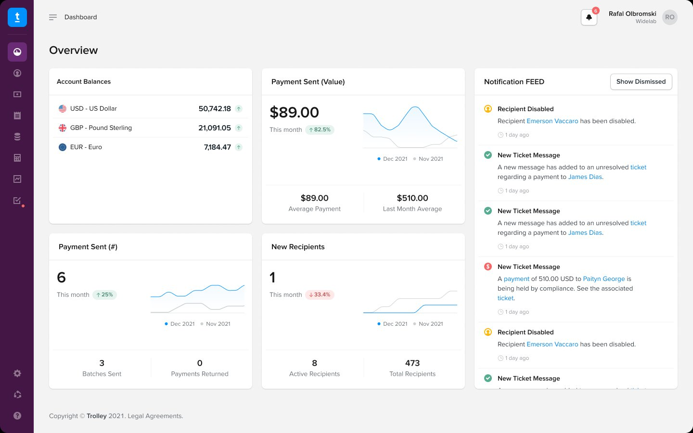
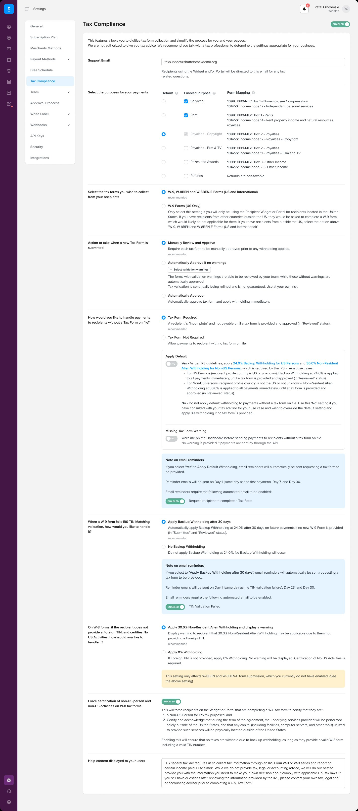
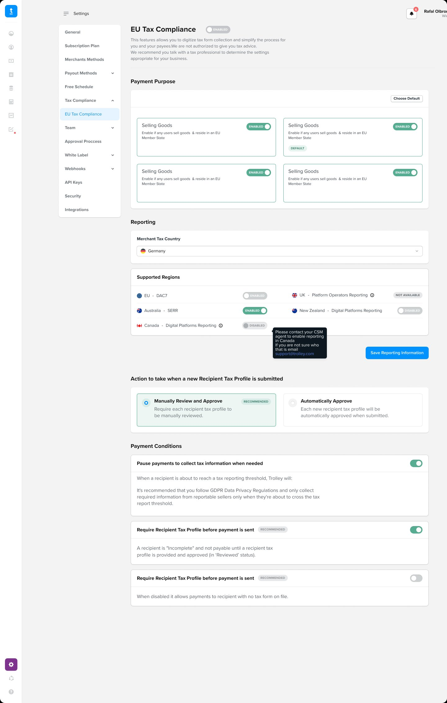
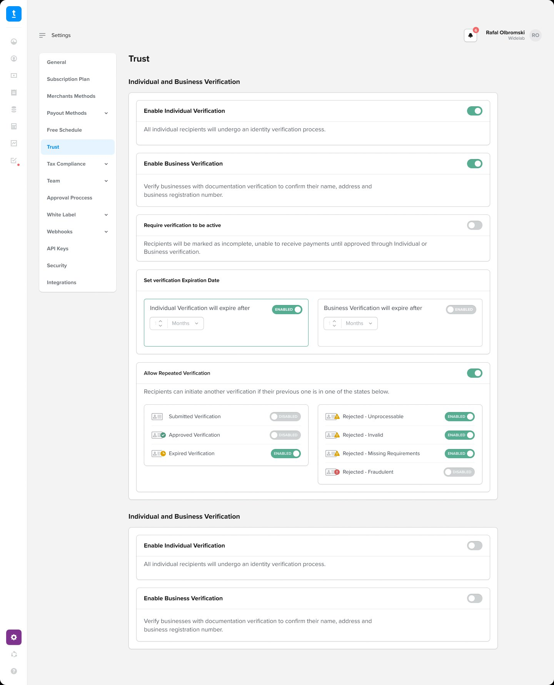
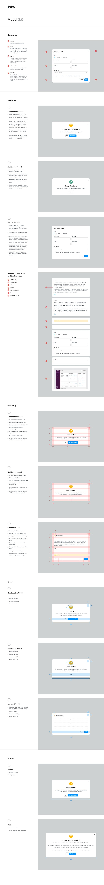
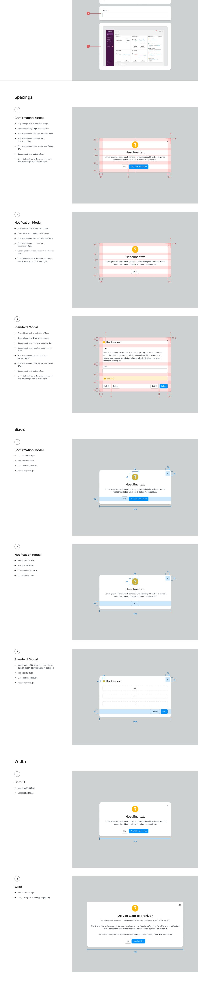
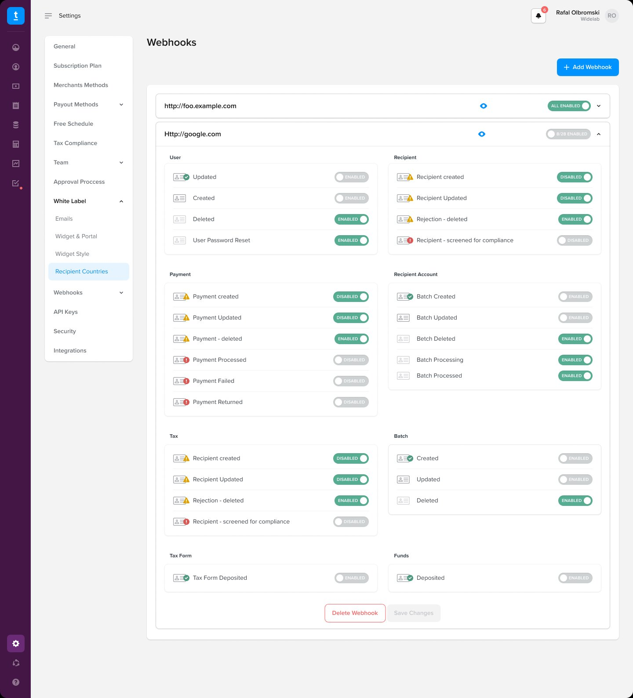
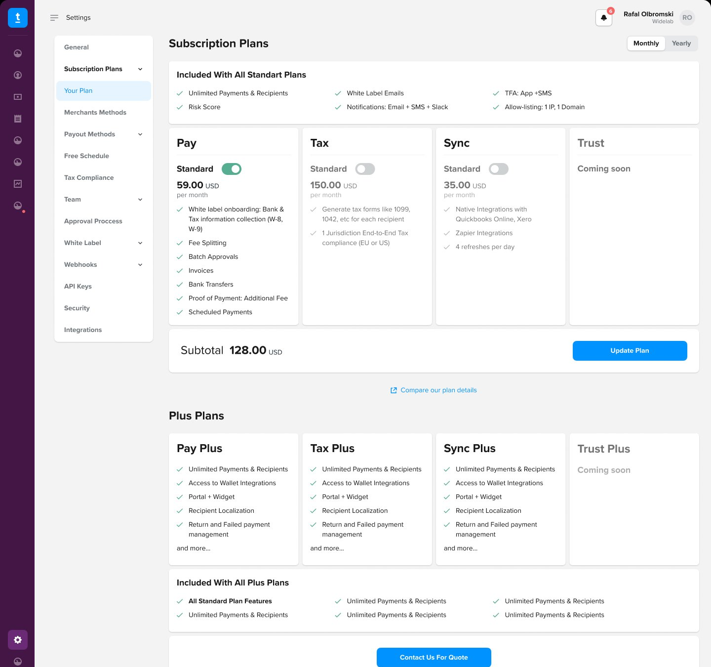

Extending and rebuilding the settings layer
I inherited a working merchant design system and extended it significantly, a new settings architecture, a modal system built from scratch, and two compliance surfaces that had no design language at all.
Bottom line: Roughly 40% fewer settings escalations, and 20+ one-off modals replaced by 4 documented variants.

The merchant dashboard
Trolley's dashboard is where finance and ops teams manage payouts to thousands of recipients, balances, payments, recipients, compliance and reporting.
The foundations were solid: a clear visual language and a working component library. The settings layer was not. It had grown by accretion, dense forms, one-off patterns, and whole compliance surfaces that simply had no design. My job was to extend the system into that territory without fracturing what already worked.
The tax settings page, before and after
The original tax settings page was a single scrolling form, dense radio buttons, walls of text, every option visible at once regardless of whether it applied. I redesigned it around how merchants actually reason about tax.
Sections instead of a scroll
The original page stacked everything vertically with no grouping, payment purpose, form type, approval action, withholding behaviour, TIN-failure handling, all in one long column. I broke it into labelled sections so merchants configure one concern at a time.
Jurisdiction as the mental model for DAC7
DAC7 is a European directive, but the same merchants often have obligations in the UK, Canada, Australia and New Zealand. I made jurisdiction the primary organising principle, so reporting obligations group by where they apply.


Trust settings, net-new
Trust had no existing design. Merchants needed control over how recipients get verified: individual vs. business, expiry windows, and which rejection states allow a retry. The configuration space was large, so the structure had to keep it legible.
One card, one decision
Each verification control is its own card with a label, a plain-language description and a toggle, nothing buried in a tooltip. “Allow Repeated Verification” expands to per-state controls only when it's relevant, so complexity reveals itself progressively.

A modal system, built from the anatomy up
Before Modal 2.0, every modal in the dashboard was slightly different, different sizes, spacing and button placement. I built the system from the anatomy up: header, body, footer, then variants (confirmation, notification, standard), with defined spacings, sizes and widths.


Webhooks, redesigned
The old webhook setup was a modal with three fields, URL, Model, Action, and one event per webhook. The redesign moved to per-event toggles across eight categories, so a single endpoint can subscribe to exactly the events it needs.

Subscription plans as a configuration
The old subscription page was a static three-column pricing table. The redesign made it a configuration: Pay, Tax, Sync and Trust as independent modules, each with a price, each toggleable, with a subtotal that updates live.

The system, running
A working merchant-dashboard prototype built from the same components — signup, settings, payments and the Modal 2.0 system — navigable end to end.
What the system gained
The through-line: extend an inherited system into its messiest, highest-stakes corners, compliance and settings, without breaking the parts that already worked. Each new surface reads as part of the same product, not a bolt-on.